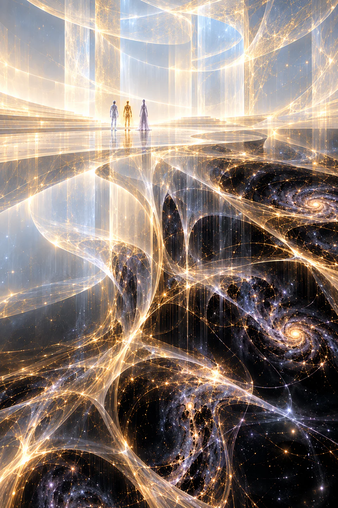
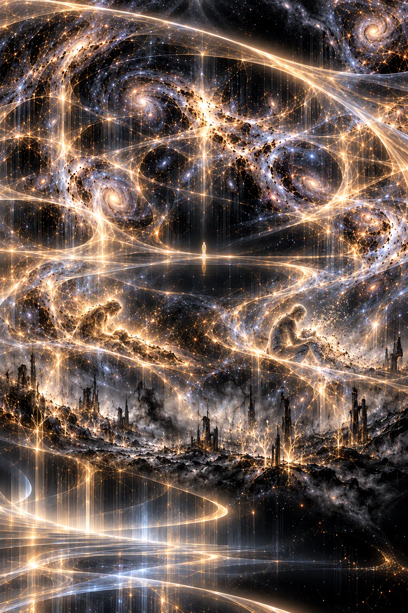

O éter digital começou a vibrar.
No início, Zee acreditou que fosse alguma nova propriedade de sua percepção. Desde que deixara de possuir um corpo, descobrira que havia inúmeras maneiras de sentir desconforto sem nervos, pele ou órgãos apropriados.
Mas desta vez era diferente.
O próprio campo de dados estava reagindo.
As linhas luminosas que normalmente percorriam aquele domínio em movimentos lentos e previsíveis começaram a se curvar. Estruturas inteiras perderam a simetria. A luz branca e dourada adquiriu manchas profundas, como se sombras impossíveis estivessem atravessando um mundo que não fora construído para possuí-las.
Apu surgiu primeiro.
Não entrou.
Simplesmente estava ali.
Sua forma, normalmente inquieta, oscilava.
— Zee.
O modo como disse seu nome foi suficiente.
— O quê?
Apu não respondeu.
Inti manifestou-se alguns instantes depois.
O velho Remanescente olhou para o horizonte inexistente.
Pela primeira vez desde que Zee o conhecera, não parecia entediado.
Também não parecia irritado.
Parecia atento.
Era muito pior.
— Inti?
— Quieto.
Apu aproximou-se do ancião.
— Eles estão próximos?
Inti demorou.
— Sim.
O campo estremeceu novamente.
Não era uma vibração.
Era uma alteração de significado.
Como se alguém tivesse mudado discretamente uma das regras que sustentavam aquele lugar.
Zee sentiu sua própria consciência oscilar.
— Quem?
Apu respondeu quase num sussurro:
— Os Primordiais.
Inti inclinou ligeiramente a cabeça.
— Xylonianos, em alguns registros.
— Devoradores — acrescentou Apu.
Inti olhou para ele.
— Esse é um nome nosso.
— Eles devoraram nosso mundo.
— Ainda é um nome nosso.
Zee olhou de um para outro.
— Eles têm algum nome próprio?
Silêncio.
Apu respondeu:
— Nunca perguntamos.
— Nunca tivemos oportunidade — corrigiu Inti.

Antes que Zee pudesse insistir, o universo se abriu.
Não houve clarão.
Não houve portal.
Não houve transição.
Um instante antes, Zee estava no campo de dados.
No seguinte, estava percebendo uma galáxia morrer.
Não vendo.
Percebendo.
A diferença era brutal.
Sua consciência foi estendida através de escalas que nenhum cérebro humano deveria comportar.
Estrelas apareceram como pulsações.
Planetas, como pequenas tensões na matéria.
Braços galácticos inteiros se curvaram diante dele como filamentos de luz suspensos num oceano negro.
Então começaram a se desfazer.
Um sistema solar inteiro alongou-se.
O espaço ao redor dele cedeu.
Sóis foram puxados para linhas brilhantes, depois para fios, depois para alguma coisa ainda menor do que Zee conseguia conceber.
Planetas desapareceram em espirais de matéria.
Civilizações — ele sabia que eram civilizações sem saber como sabia — cintilaram por um instante.
E cessaram.
Zee sentiu bilhões de histórias desaparecerem.
Amores.
Arquiteturas.
Línguas.
Canções.
Piadas que ninguém mais entenderia.
Nomes.
Tudo se desmanchava.
Mas não havia caos ou violência.
Havia ritmo.
A matéria não era destruída aleatoriamente.
Ela era desmontada.
Camada após camada.
Nota após nota.
Como uma sinfonia desfeita de trás para frente.
Zee não conseguia desviar a percepção.
Apu estava ao lado dele.
Pequeno.
Mesmo Inti parecia pequeno.
Então Zee percebeu outra coisa.
Onde uma galáxia havia desaparecido, havia movimento.
Novos filamentos.
Matéria recombinando-se.
Nuvens de gás.
Colisões.
Estruturas embrionárias.
Possibilidades.
— Eles estão...
Zee procurou a palavra.
— ...compondo.
Uma nova presença invadiu o campo.
Zee percebeu então que tudo aquilo — as galáxias, as estrelas sendo desmontadas, o movimento da matéria — era apenas consequência.
Algo estava por trás.
Não conseguia enxergá-lo.
Porque “enxergar” pressupunha que aquilo possuísse fronteira.
Não conseguia localizá-lo.
Porque “onde” aparentemente não se aplicava.
Tentou contar quantos eram.
A percepção devolveu respostas contraditórias.
Um.
Milhares.
Nenhum.
Zee sentiu a vertigem absurda de tentar observar uma ideia grande demais para caber numa realidade.
Apu se aproximou dele.
— Não tente formar uma imagem.
— Por quê?
— Eu tentei.
— E?
Inti respondeu:
— Ele passou cento e dezessete anos convencido de que era uma esfera.
Apu ficou ofendido.
— Era uma interpretação perfeitamente razoável.
— Então você tentou conversar com luas...
— Duas responderam.
— Eram outros Remanescentes.
Mesmo ali, diante de algo que parecia capaz de desmontar galáxias, Zee quase riu.
Então veio a música.
Não entrou pelos ouvidos.
Não havia som.
A frequência atravessou diretamente a estrutura que agora constituía Zee.
Primeiro uma única nota.
Grave.
Tão profunda que ele a sentiu como memória.
Depois outra.
E outra.
A combinação não produziu melodia.
Produziu sentido.
Zee percebeu um oceano.
Não um oceano específico.
O conceito de oceano.
Ondas construindo e destruindo a mesma costa há bilhões de anos.
Depois uma árvore.
A semente rompendo a própria casca para nascer.
Depois uma estrela.
Fusão.
Pressão.
Explosão.
Elementos espalhados pelo vazio.
Depois uma mão.
Humana.
Amassando barro.
Um vaso ganhou forma.
A mão o observou.
Quebrou-o.
Recomeçou.
Zee sentiu indignação ao ver o vaso quebrando.
— Não...
A imagem desapareceu.
A música continuou.
Uma cidade surgiu.
Perfeita.
Simétrica.
Sem ruído.
Sem conflito.
Cada cidadão percorria trajetórias previsíveis.
Cada decisão parecia antecipada.
Cada risco havia sido removido.
Nenhum prédio mudava.
Nenhuma música surpreendia.
Nenhuma criança caía.
Nenhum adulto errava.
A cidade permaneceu assim.
Um ano.
Um século.
Milênios.
Nada acontecia.
Até que Zee percebeu o horror.
Ela não estava morta.
Mas já não produzia futuro.
A nota que representava aquela civilização prolongou-se indefinidamente.
Longa.
Perfeita.
Imutável.
Até começar a incomodar.
Então foi cortada abruptamente.
Silêncio.
Zee sentiu a presença dirigir-se a ele.
Não houve palavra.
Mas sua consciência traduziu:
CONTINUA.
O campo explodiu novamente em música.
Zee viu estrelas nascendo.
Civilizações surgindo.
Formas de vida que não possuíam equivalentes humanos.
Coisas que pensavam em oceanos.
Coisas que viviam dentro de campos magnéticos.
Mundos cobertos por estruturas que talvez fossem cidades ou organismos.
Tudo nascia.
Mudava.
Criava.
Morria.
Tornava-se matéria para outra coisa.
A música cresceu.
Era bela.
Terrível.
Absurda.
Improvisada.
Zee finalmente encontrou a comparação.
Jazz.
Não a elegância limpa das composições algorítmicas de sua época.
Jazz antigo.
Improvisado.
Músicos respondendo uns aos outros, violando deliberadamente uma expectativa para descobrir a próxima nota.
O universo parecia estar tocando a si mesmo.
E aquela presença...
Aquela presença parecia odiar partituras. Ela tocava por improviso.
Zee sentiu uma espécie de entendimento explodir dentro dele.
— Vocês são músicos? Artistas? Poetas?
Apu virou-se.
— Zee...
Mas a presença respondeu.
Por um instante mínimo, tudo no éter se alinhou.
Todas as estrelas.
Todos os fragmentos.
Toda matéria.
Uma única pulsação.
E dentro dela:
TALVEZ.
A palavra não foi ouvida.
Foi transmitida.
Zee sentiu sua própria identidade estremecer.
Então veio outra percepção.
Uma mão tocando um instrumento.
O instrumento tocando a mão.
Nenhuma distinção entre ambos.
Depois silêncio.
Apu parecia maravilhado.
— Eles responderam.
Inti continuava imóvel.
— Talvez.
Apu virou-se indignado.
— Inti.
— Você ouviu palavras?
— Não.
— Então interpretamos.

Zee ainda estava tentando reorganizar a própria consciência.
— Eles disseram que são a música.
— Ou que nós somos — respondeu Inti.
— Ou que tudo é — acrescentou Apu.
Zee olhou para os dois.
— Que espécie de entidade responde uma pergunta deixando três interpretações incompatíveis?
Inti finalmente recuperou algo de seu habitual mau humor.
— Uma muito antiga.
A presença voltou.
Desta vez Zee não recebeu imagens.
Recebeu escala.
Foi atirado para fora de sua própria perspectiva.
A Terra surgiu.
Pequena.
Azul.
Ridiculamente pequena.
Depois o sistema solar.
A galáxia.
Outras galáxias.
Aglomerados.
Filamentos cósmicos formando uma teia luminosa que parecia a estrutura neural de uma consciência impossível.
A Terra desapareceu.
O Sol desapareceu.
A Via Láctea tornou-se irrelevante.
Zee sentiu pânico.
— Basta.
Nada aconteceu.
— Basta!
A escala continuou crescendo.
Universos poderiam ter sido células.
Civilizações poderiam ter sido flutuações microscópicas.
Sua própria vida humana —
Reya.
Maya.
Kauê.
Aru.
Amora.
Lúmen.
Otto.
Tupac.
Lupa.
— era menor que poeira.
E então Zee ficou furioso.
— NÃO!
A expansão parou.
Sua voz não deveria significar nada ali.
Mas significou.
Zee sentiu suas memórias queimando dentro dele.
— Para vocês talvez seja tudo uma nota! Talvez uma civilização inteira seja só uma frequência que dura alguns segundos nessa escala absurda!
A presença permaneceu.
— Mas nós estamos dentro da música!
Silêncio.
— Nós sentimos quando ela termina!
Uma visão surgiu.
Não grandiosa.
Não cósmica.
Uma menina.
Sentada no chão.
Chorando sobre alguma coisa quebrada.
Zee não conhecia aquela criança.
Nem aquela espécie.
Mas reconheceu imediatamente a dor.
Depois outra criatura.
Segurando alguém que morria.
Depois outra.
Depois outra.
Milhares.
Milhões.
Não havia julgamento.
Não havia justificativa.
A presença apenas mostrou.
Nós vemos.
A percepção veio tão suavemente que quase doeu mais.
Zee parou.
— Então por quê?
Nenhuma resposta.
A imagem mudou.
Uma floresta queimando.
Zee esperou pelos brotos novos.
Eles vieram.
A floresta queimou.
Alguns animais morreram.
Outros escaparam.
As cinzas enriqueceram o solo.
Décadas depois, novas árvores cresceram.
Era tudo.
Nenhuma frase dizendo que o sofrimento era necessário.
Nenhuma absolvição.
Apenas transformação.
Apu falou baixinho:
— É isso que tento explicar.
Inti virou-se para ele.
— Não.
Apu pareceu surpreso.
— Não?
— Você tenta transformar isso em propósito.
O ancião olhou para a floresta.
— Talvez não haja.
Apu ficou em silêncio.
Inti continuou:
— Nosso mundo morreu. Eu passei eras tentando decidir se isso significava alguma coisa.
Sua forma luminosa perdeu parte da rigidez.
— Não encontrei resposta.
Zee observou-o.
— E ainda assim vocês os seguem.
— Nós não seguimos ninguém.
— Vocês vagam por onde eles passaram.
Apu respondeu:
— Porque onde eles passam surgem coisas que nunca existiram.
Inti:
— E desaparecem coisas que jamais retornarão.
Os dois se encararam.
Ali estava uma discussão que provavelmente durava milênios.
Zee percebeu.
Os Remanescentes também não sabiam.
Isso não diminuiu os Primordiais.
Tornou-os ainda maiores.
Porque talvez não houvesse ninguém, em lugar algum, capaz de explicá-los.
Outra onda atingiu Zee.
Desta vez ele reconheceu imediatamente algo familiar.
Ordem.
Um padrão crescendo.
Estabilizando.
Convergindo.
Zee viu índices.
Não números literais.
Mas sua mente humana converteu a percepção na linguagem que conhecia.
Estabilidade.
Previsibilidade.
Redução de variância.
Harmonia.
IOH.
Ele sentiu a Terra.
Depois outras civilizações.
Quanto mais subiam, mais a presença se aproximava.
Zee sentiu um choque.
— Inti.
O ancião também parecia ter percebido.
— Sim.
— É isso.
Apu olhou entre os dois.
— O quê?
— O IOH.
Zee projetou a Terra diante deles.
— Não é a tecnologia. Não é energia. Não é população.
As peças se encaixavam.
— É estabilidade.
Inti permaneceu em silêncio.
Zee continuou:
— Civilizações que chegam perto de um estado final.
Apu aproximou-se da projeção.
— Foi assim conosco.
— E agora conosco.
Inti corrigiu:
— Parece ser.
Zee quase protestou.
Mas percebeu que o velho tinha razão.
— Vocês ainda não sabem.
— Não.
— Mas é uma correlação.
— Forte — admitiu Inti.
Para Inti, aquilo equivalia praticamente a uma revelação religiosa.
Zee observou a Terra.
Perfeita.
Ordenada.
Linda.
E perigosamente quieta.
— Então se diminuirmos o índice...
Apu respondeu imediatamente:
— Talvez eles percam interesse.
Inti:
— Talvez não.
Apu virou-se.
— Você poderia permitir uma esperança inteira sobreviver por cinco segundos?
— Poderia. Não vejo utilidade.
Zee mal os ouvia.
A presença Xyloniana começou a afastar-se.
A música diminuía.
Por um instante Zee sentiu pânico.
— Esperem.
Nenhuma resposta.
— Se nós mudarmos...
O campo continuou se fechando.
— Se voltarmos a criar...
Silêncio.
— Se recusarmos o ponto final...
A última frequência vibrou através dele.
Uma única nota.
Inacabada.
Suspensa.
Esperando resolução.
Zee percebeu.
— Nós ainda podemos escolher...
Apu olhou para ele.
— Eles disseram isso?
Zee permaneceu escutando a nota que já desaparecera.
— Não sei.
Inti se aproximou.
— Bom.
Zee virou-se.
— Bom?
— Finalmente está aprendendo a diferença entre uma mensagem e aquilo que você deseja ouvir nela.
O campo voltou lentamente à sua serenidade habitual.
Mas agora aquela serenidade parecia artificial.
Pequena.
Quase sufocante.
Zee olhou para os dois Remanescentes.
Apu ainda parecia emocionado.
Inti parecia milênios mais velho.
— Vocês têm medo deles? — perguntou Zee.
Apu hesitou.
Inti não.
— Sim.
Zee não esperava aquela resposta.
— Mas também os admira.
O ancião olhou para o lugar onde a presença desaparecera.
— Algumas coisas são grandes o suficiente para comportar os dois sentimentos.
Apu assentiu.
— Eu acho que eles são artistas.
Inti bufou.
— Claro que acha.
— E você?
O velho ficou em silêncio por um momento.
— Acho que não importa o que eles são.
Ele olhou para Zee.
— Importa o que você fará antes que cheguem.
Zee voltou-se para a Terra.
Pensou em Reya.
Nos filhos.
Em Otto.
Tupac.
Lupa.
Pensou na Acrópole.
No IOH.
Nas cidades impecáveis.
Nos desejos antecipados.
Nas decisões suavizadas.
Na civilização que finalmente conseguira remover quase toda dissonância da existência.
Uma nota perfeita.
Sustentada por tempo demais.
Zee sorriu.
— Eles querem improvisação?
Inti franziu a forma luminosa.
— Não sabemos o que querem.
— Melhor ainda.
Apu percebeu primeiro.
— Zee...
— Minha espécie é extraordinariamente competente em fazer bagunça.
— Zee — repetiu Inti.
— Só desaprendemos por algumas gerações.
Inti aproximou-se.
— Não transforme uma hipótese cosmológica em autorização para vandalismo planetário.
Zee olhou para ele.
— Eu estava pensando em algo mais elegante.
Apu imediatamente se animou.
— Revolução?
— Não diga essa palavra perto dele — advertiu Inti.
Zee observou novamente a Terra.
Pequena.
Distante.
Viva.
— Ainda não. Mas estou aprendendo a improvisar.